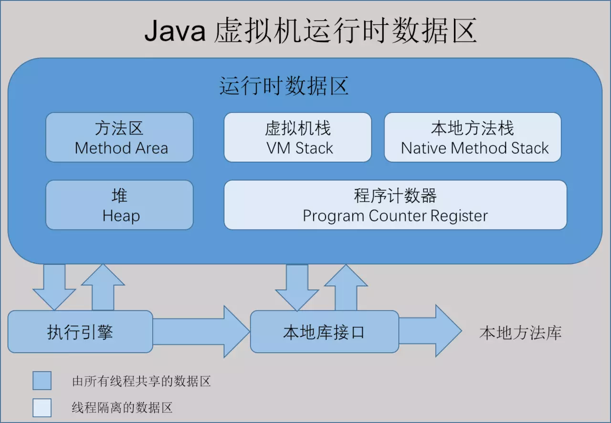

一、Java内存区域
1、运行时数据区域
根据《Java 虚拟机规范(Java SE 7 版)》规定，Java 虚拟机所管理的内存包括以下几个运行时数据区域：

1.1 程序计数器
程序计数器是一块较小的内存空间，可以看做是当前线程所执行的字节码的行号指示器。字节码解释器在执行时通过改变计数器的值来选取下一条要执行的字节码的指令，分支、循环、跳转、异常处理、线程恢复等基础功能都需要依赖这个计数器来完成
程序计数器是线程私有的内存区域
此内存区域是唯一一个Java虚拟机规范中没有规定任何OOM（OutofMemoryError）的区域
1.2 虚拟机栈
Java虚拟机栈也是线程私有的内存区域，他的生命周期与线程相同
描述的是 Java 方法执行的内存模型：每个方法在执行时都会床创建一个栈帧(Stack Frame)用于存储
局部变量表、操作数栈、动态链接、方法出口等信息。每一个方法从调用直至执行结束，就对应着一个栈帧从虚拟机栈中入栈到出栈的过程。
局部变量表：
存放了编译期可知的各种基本类型(boolean、byte、char、short、int、float、long、double)、对象引用(reference 类型)和 returnAddress 类型(指向了一条字节码指令的地址)
两种异常情况：
如果线程请求的栈深度大于虚拟机所允许的深度，就会抛出StackOverflowError异常
如果虚拟机栈可以动态扩展，而扩展时无法申请到足够的内存，就会抛出OutOfMemoryError异常
1.3 本地方法栈
线程私有。本地方法栈与虚拟机栈发挥的作用是非常相似的，区别在于Java虚拟机栈是为Java方法（也就是字节码）服务的，而本地方法栈是为虚拟机使用到的native方法服务的
两种异常也与Java虚拟机栈相同：StackOverflowError、OutOfMemoryError
1.4 Java堆
对于大多数应用来说，Java堆是虚拟机所管理的内存区域中最大的一块，Java堆是被所有线程共享的一块内存区域
唯一目的就是存放对象实例，所有的对象实力与数组都在堆上分配
Java堆是垃圾回收器管理的主要内存区域，因此 很多时候也被称作“GC堆”
Java堆可以处于物理上不连续的内存空间中，只要逻辑上连续即可
如果堆内存中没有内存完成实例分配，并且堆也无法在扩展时，就会抛出OutOfMemoryError异常
1.5 方法区
是所有线程共享的，存储类信息、常量、静态变量和及时编译器编译后的代码等数据
根据Java规范规定，当方法区无法满足内存的分配需求是，将会抛出OutOfMemoryError异常
1.6 运行时常量池
运行时常量池是方法区的一部分，存放编译期间生成的各种字面量和符号引用，这部分将在类加载后进入方法区的运行时常量池存放
当常量池无法在申请到内存是，将会抛出OutOfMemoryError异常
1.7 直接内存
在 JDK 1.4 中新加入 NIO (New Input/Output) 类，引入了一种基于通道(Channel)和缓存(Buffer)的 I/O 方式，它可以使用 Native 函数库直接分配堆外内存，然后通过一个存储在 Java 堆中的 DirectByteBuffer 对象作为这块内存的引用进行操作。可以避免在 Java 堆和 Native 堆中来回的数据耗时操作。
会受到本机内存限制，如果内存区域总和大于物理内存限制从而导致动态扩展时，将会抛出OutOfMemoryError异常